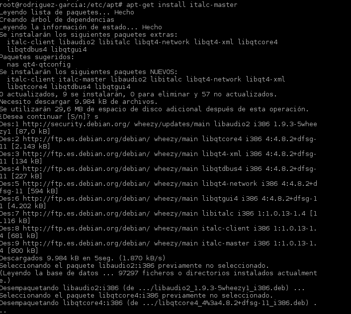
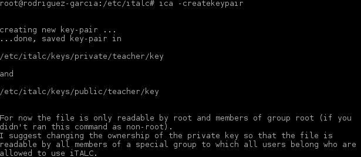
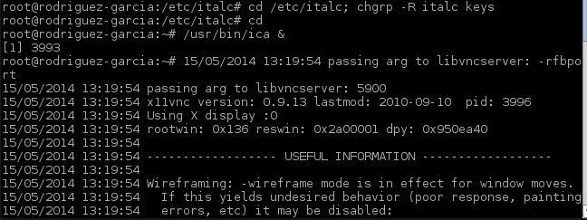
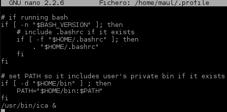
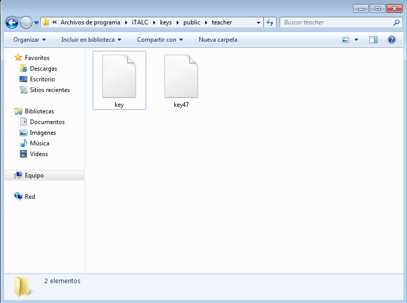
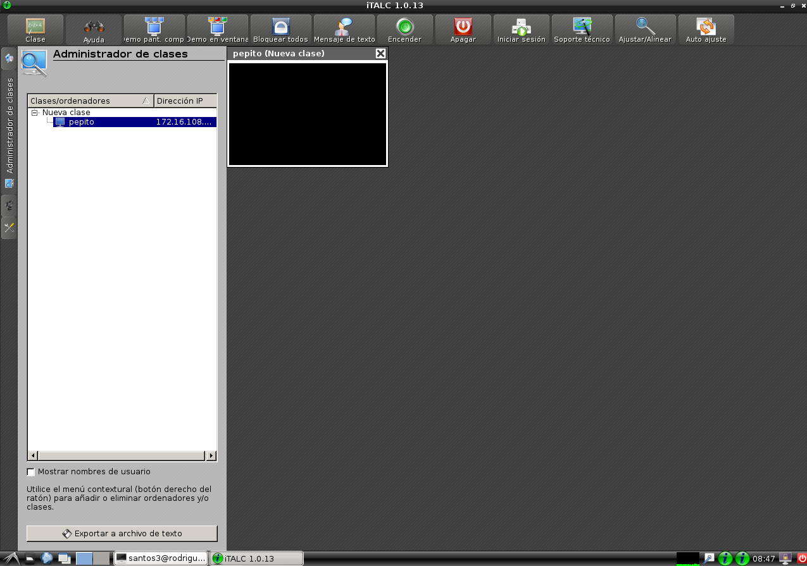

- Módulo: FUW
- Título del trabajo Control Remoto
- Componentes del grupo: Güinel Rodríguez García.
- Curso Académico: 2013/2014
- Fecha de entrega: 20 de mayo de 2014
-Vamos a necesitar 3 máquinas virtuales:
MV1 italc Master (Debian)
MV2 italc Slave (Windows7)
MV3 italc Slave (Debian)
-Instalamos iTalc master en Linux.

-Se crean unas claves.

-Damos permisos al grupo italc.

-Para que se inicie automáticamente al iniciar sesión, editaremos el fichero /home/maul/.profile.

-Instalamos el iTalc en windows.
-Debemos cambiar la contraseña public con la de linux.

-Entramos en el iTalc y comprobamos si funciona.
